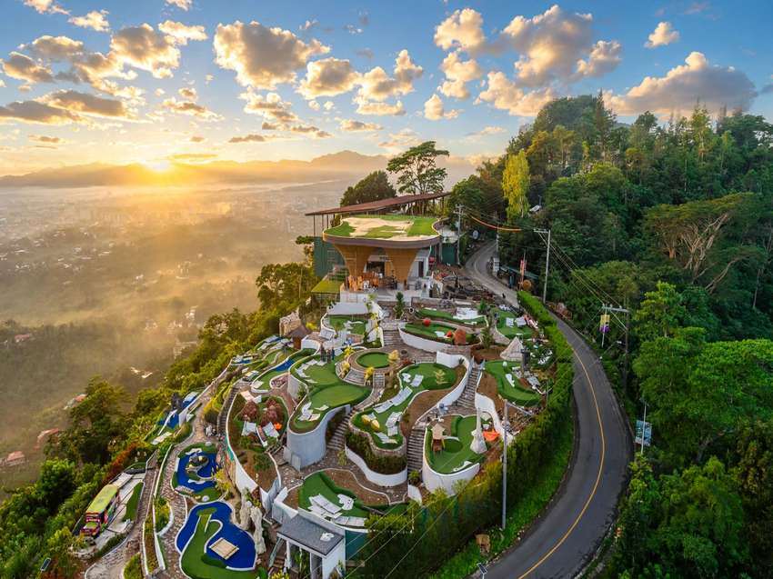

Busay has no shortage of viewpoints, but a seated dinner with the city lights spread below is a different experience from a quick photo stop. Highlands de Busay, listed online as The Cliff at Highlands de Busay, is a hillside restaurant built around that view. The menu mixes Filipino and international dishes, and it is a common choice for birthdays and anniversaries.
This guide covers the restaurant's hours, how to book, what to order, how to get there from Cebu City, and how to pair a dinner here with a stop at the Tops lookout further up the hill. Prices, menus and opening times change, so treat the details as a starting point and confirm them before you travel.
The restaurant is easiest to enjoy as an evening plan rather than a midday lunch. The hills are cooler than the city, and the best views come when the light fades.

The View and the Atmosphere
The restaurant looks out over Cebu City, the hills around it and a stretch of sea. Most visitors time their arrival for sunset. Across the year, the sun sets somewhere between about 5:30 and 6:30 in the evening, so a 4:30 or 5:00 arrival gives you time to get a table with a clear outlook before the sky changes colour.
Busay runs several degrees cooler than the city, and the air can turn misty after dark, particularly in the rainy months. Bring a light layer even if the afternoon feels warm. Once the lights come on below you, the temperature drops quickly on an open terrace.
Hours and Reservations
Highlands de Busay opens from 2:00 to 10:00 in the evening on Tuesday to Thursday, and from 11:00 in the morning to 10:00 at night on Friday to Sunday. It is closed on Mondays. These hours come from a feature updated in September 2026, so check the restaurant's Facebook page before you set a date, especially around public holidays.
Book ahead for weekend evenings and for any celebration, since the best tables near the edge go first. The restaurant's Facebook page is the channel to use for reservations. Ask at the same time about the group size and whether a table with a view can be held for sunset.
What to Order
A 2024 feature on the restaurant singles out the Siam seafood curry served in a coconut shell. It is a good choice for a first visit because it is rich, shareable and easy to pair with rice. Because the menu covers Filipino and international food, a mixed order works better than three dishes from the same section.
Check the current menu on the Facebook page before you go, since dishes and prices change. Plan for a sit-down dinner rather than a snack, and allow extra time on weekends when the kitchen is busy.
Getting There from Cebu City
Highlands de Busay sits in the Busay hills, a short drive from the city centre. A taxi or ride-hailing car is the simplest option for a dinner visit, because it saves you from working out the connection on a steep road after dark. Jeepneys and buses also serve Busay, but the last stretch is the hard part to plan.
Share the map pin with your driver before you leave, and confirm the route with the restaurant if you are coming from a different part of the city. The climb is steep and winding, so a driver who knows the hill will save you time.
Pairing a Dinner with the Tops Lookout
A good plan is to start at the Tops lookout in the late afternoon, enjoy the daylight views and the deck, then ride down to the restaurant for dinner. Tops charges ₱100 for adults, ₱70 for seniors and persons with disabilities with a valid ID, and nothing for children under two. The site is open 24 hours. The official shuttle from the IT Park Transport Terminal is ₱200 for the round trip, including entrance.
You will need a ride between the two places. Check the drive time at the hour you plan to travel, since traffic on the hill changes through the afternoon. Our Tops guide covers the shuttle, the upper decks and the best time to visit in more detail, and the Busay day trip post covers how the stops fit together in a single afternoon.
Is It Worth the Trip?
Yes, if you want a sit-down dinner above the city and the sunset is part of the plan. Skip it if you only have an hour and want a quick look at the skyline, because the Tops lookout serves that purpose better. Go on a weekday if you want a quieter table, and book early if you are visiting on a weekend or for a celebration.